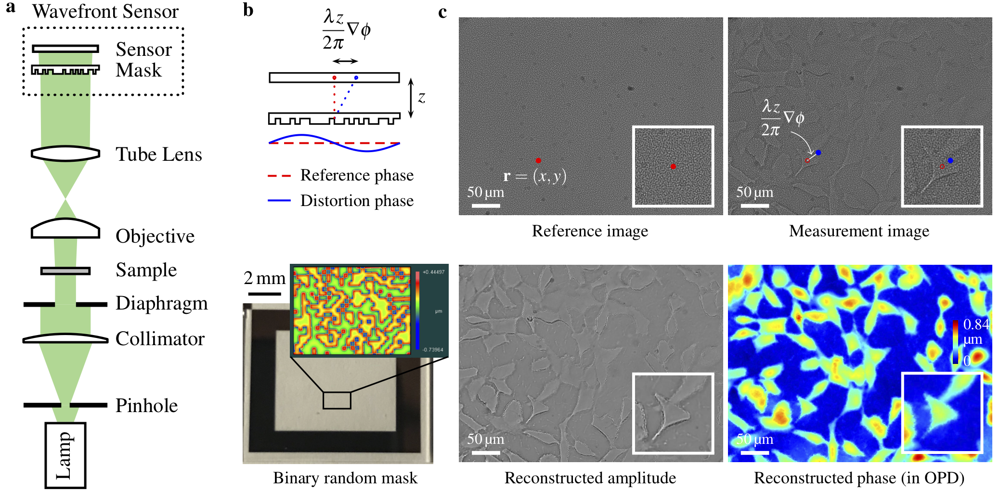

Quantitative Phase and Intensity Microscopy Using Snapshot White Light Wavefront Sensing
Congli Wang, Qiang Fu, Xiong Dun, Wolfgang Heidrich
Scientific Reports

Quantitative phase imaging with a coded wavefront sensor. (a) Optical setup for our prototype quantitative phase microscope. Intensity sensor and sample are at conjugate planes, collimated white light is configured for sample illumination. (b) Principle of the coded wavefront sensor. A normal intensity sensor is overlaid by a binary phase mask whose Zygo interference map is shown as inset image. (c) The diffraction pattern moves in proportion to local wavefront slopes, as indicated by the red and blue dots. Raw captured images reveal a diffraction pattern movement caused by distortion phase. Inset images are magnified close-ups for regions of interest. Given the image pair, intensity and phase images can be altogether numerically reconstructed for unstained thin transparent cells. The sample contains HeLa cells taken under a ×20 Mitutoyo plan apochromat objective, 0.42 NA.
Abstract
Phase imaging techniques are an invaluable tool in microscopy for quickly examining thin transparent specimens. Existing methods are limited to either simple and inexpensive methods that produce only qualitative phase information (e.g. phase contrast microscopy, DIC), or significantly more elaborate and expensive quantitative methods. Here we demonstrate a low-cost, easy to implement microscopy setup for quantitative imaging of phase and bright field amplitude using collimated white light illumination.
Paper, Poster, and Code
paper [Wang2019QPM.pdf (9.4MB)]
supplementary material [Wang2019QPM_supp.pdf (6.3MB)]
COSI version [Wang2019QPM_COSI.pdf (1.3MB)]
poster [Wang2019QPM_poster.pdf (1.4MB)]
code [GitHub repository]